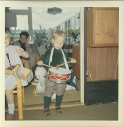

Sinds ik me kan herinneren trommel ik: als peuter en kleuter op speelgoedtrommeltjes en lege waspoederdozen van Dash. (als je van mijn generatie of eerder bent dan herinner je je die nog wel) Mijn eerste drumlessen kreeg ik tijdens mijn lagere schooltijd van Luuk Nagtegaal, destijds slagwerker van het Residentie Orkest. Na een aantal jaren gedrumd te hebben in verschillende bandjes maakte ik de overstap naar de Cajon, en da’s een blijvertje. Paul van Nispen van: Drumschool Voorburg
leerde
me de fijnere kneepjes van het Cajonspel. Het is een fascinerend instrument en zoveel makkelijker mee te
nemen
dan een drumstel 😉. Da’s vooral handig omdat ik de ‘Cajonist van Dienst’ ben van o.a. Guy Gorman
https://www.guyggorman.com/ , Schering en Inslag
https://www.facebook.com/ScheringInslag ,
Paul Smit https://www.facebook.com/paul.smit.167
en The 4&6. Zie mijn galerij voor wat muzikale snacks en een
overzicht van optredens. De meeste zijn door fans opgenomen met hun telefoon, dus de kwaliteit is niet
geweldig.
Het geeft wel een leuke sfeerimpressie.
Na met veel plezier een aantal standaard Cajons bespeeld te hebben (van Latin Percussion, La Rosa en
Schlagwerk)
is het nu tijd voor een maatwerk exemplaar van WG Cajons. Wilko Gijsbertsen heeft ‘m helemaal met de hand
voor
me gemaakt. Zijn collectie wijzigt continu, omdat hij ze van gerecycled hout maakt. Elke Cajon is daardoor
uniek, maar klinkt altijd even vet. Info hier https://www.facebook.com/wgcajon